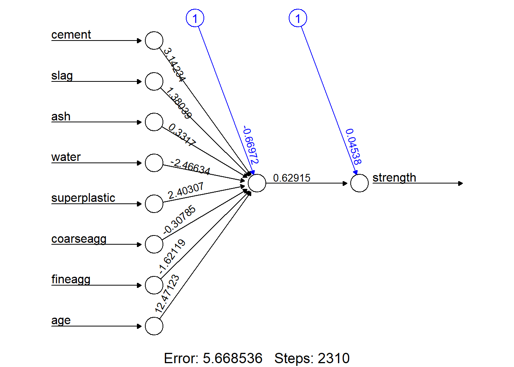
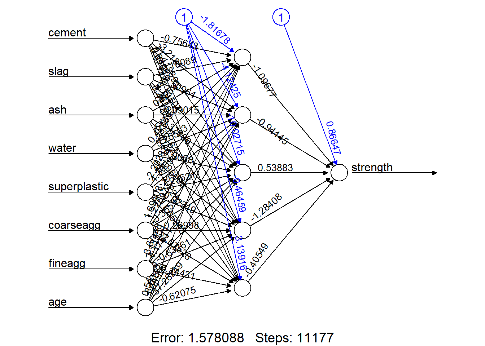
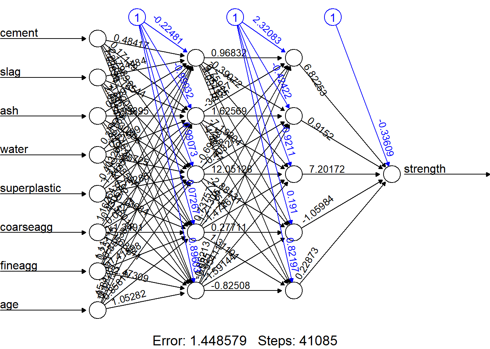

library(readxl)
concrete_data<- read_excel("db/Concrete_Data.xls")
names(concrete_data)<-c("cement","slag","ash","water","superplastic",
"coarseagg","fineagg","age","strength")
normalize <- function(x) {
return((x - min(x)) / (max(x) - min(x)))
}Deep Learning
DNN: Ejemplos y práctica
1 Ejemplo en R, librería neuralnet
Utilizaremos la librería neuralnet de R, y datos del repositorio del Center for Machine Learning and Intelligent Systems de la Universidad de California, en particular, el conjunto de datos Concrete Compressive Strength Data Sets.
2 Lectura de datos y preprocesamiento
Primero leemos los datos y creamos una función para normalizar los datos (escalamiento [0,1]). Los datos pueden ser encontrados en el material del curso.
Los datos normalizados quedarán de la siguiente forma:
concrete_data_norm <- as.data.frame(lapply(concrete_data, normalize))
summary(concrete_data_norm$strength) Min. 1st Qu. Median Mean 3rd Qu. Max.
0.0000 0.2663 0.4000 0.4172 0.5457 1.0000 summary(concrete_data$strength) Min. 1st Qu. Median Mean 3rd Qu. Max.
2.332 23.707 34.443 35.818 46.136 82.599 Debido a que los datos ya están ordenamos aleatoriamente, simplemente dividimos en dos partes de 75 y 25 porciento, respectivamente
concrete_train <- concrete_data_norm[1:773, ]
concrete_test <- concrete_data_norm[774:1030, ]3 Modelo 1
El modelo que emplearemos será una red simple de perceptrón multicapa (simple multilayer feedfoward network). A continuación cargamos la librería neuralnet y establecemos semilla y modelo.
library(neuralnet)
set.seed(411)
concrete_model <- neuralnet(strength ~ cement + slag +
ash + water + superplastic
+ coarseagg + fineagg + age,
data = concrete_train)plot(concrete_model, rep="best")
model_results <- compute(concrete_model, concrete_test[1:8])
predicted_strength <- model_results$net.result
cor(predicted_strength, concrete_test$strength) [,1]
[1,] 0.7209429Debido a que es un problema de predicción, no podemos realizar una matriz de confusión para determinar el nivel de precisión
4 Modelo 2
concrete_model2 <- neuralnet(strength ~ cement + slag +
ash + water + superplastic +
coarseagg + fineagg + age,
data = concrete_train, hidden = 5)plot(concrete_model2, rep="best")
model_results2 <- compute(concrete_model2, concrete_test[1:8])
predicted_strength2 <- model_results2$net.result
cor(predicted_strength2, concrete_test$strength) [,1]
[1,] 0.81383625 Modelo 3
En este problema no podemos utilizar una función de activación Rectified linear unit (ReLU) debido a que no tiene derivada en x=0. Alternativamente, utilizamos una función de activación llamada softplus o Smooth ReLI
softplus <- function(x) { log(1 + exp(x)) }
concrete_model3 <- neuralnet(strength ~ cement + slag +
ash + water + superplastic +
coarseagg + fineagg + age,
data = concrete_train,
hidden = c(5, 5), act.fct = softplus)plot(concrete_model3, rep="best")
model_results3 <- compute(concrete_model3, concrete_test[1:8])
predicted_strength3 <- model_results3$net.result
cor(predicted_strength3, concrete_test$strength) [,1]
[1,] 0.6761314strengths <- data.frame(actual = concrete_data$strength[774:1030],pred = predicted_strength3)
head(strengths, n = 3) actual pred
774 37.42476 0.4099593
775 11.46599 0.2406689
776 22.43555 0.2818004cor(strengths$pred, strengths$actual)[1] 0.6761314unnormalize <- function(x) {
return((x * (max(concrete_data$strength)) -
min(concrete_data$strength)) + min(concrete_data$strength))
}
strengths$pred_new <- unnormalize(strengths$pred)
strengths$error <- strengths$pred_new - strengths$actual
head(strengths, n = 3) actual pred pred_new error
774 37.42476 0.4099593 33.86232 -3.5624375
775 11.46599 0.2406689 19.87906 8.4130769
776 22.43555 0.2818004 23.27650 0.8409468cor(strengths$pred_new, strengths$actual)[1] 0.6761314